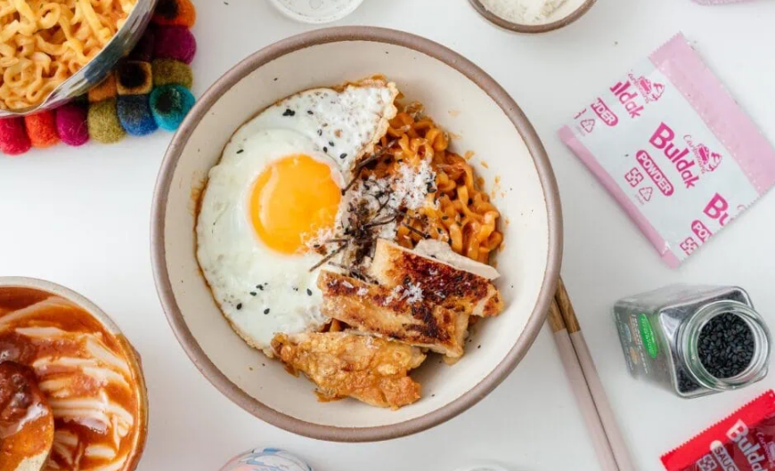

Home
Reference
Buldak Carbonara Recipe

Description
Buldak carbonara is a flavor of instant ramen from Samyang. It’s part of a ramen line that features super hot-n-spicy ramens. The buldak carbonara flavor comes in a pink pouch with a cute drawing of a hot chicken on it. I think the pink denotes the fact that it’s less spicy than the fire red 2x spicy buldak. Essentially, it’s a hot and spicy chicken ramen but with a carbonara-inspired sauce that is creamy thanks to the extra little packet of cheese.
Ingredients
- 1/4 cup finely grated parmesan
- 2 tsbp milk powder or milk
- 1 tsbp gochujang or to taste
- egg yolk
- 2 tsp soy sauce
- 1 tsp chicken bouillon
- 1 tsbp rice vinegar
- 1 tsp garlic powde
- 1 tsp sugar
- 1/2 tsp toasted sesame oil
- 1-2 egg yolks use double the egg yolks for extra richness
- 1 portion noodles of choice, see notes
Steps
- In a bowl, whisk together the parmesan cheese, milk powder, gochujang, soy sauce, chicken bouillon, rice vinegar, garlic powder, sugar, toasted sesame oil, and egg yolk (or 2 for extra richness). Mix until well combined.
- Bring a pot of water up to a boil and cook your noodles according to the package instructions. Save 1/2 cup of the noodle cooking water and drain the noodles, leaving them in the pan.
- Stir 1/4 cup of the hot noodle water into the sauce then add the sauce to the noodles in the pot, tossing to coat. Add more of the hot reserved noodle water as needed, while mixing, over low heat, until the sauce is smooth and creamy and clings to the noodles. Remove from the heat and enjoy!